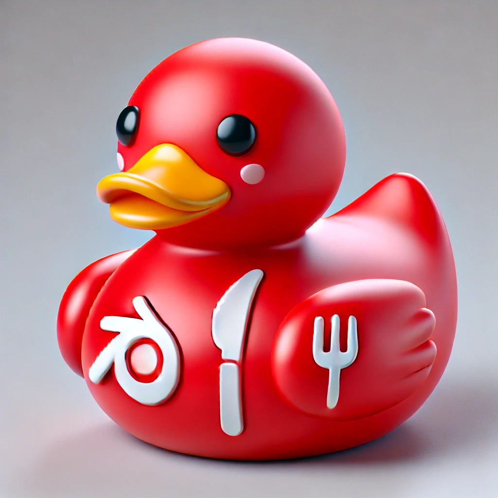

¡Bienvenidos al mejor bar de tapas de la ciudad!
¡Bienvenido a nuestro restaurante, donde la pasión por la comida se combina con la calidez del servicio para crear una experiencia gastronómica inolvidable! Nos enorgullecemos en ofrecer una selección exquisita de platos que satisfarán los paladares más exigentes. Nuestra cocina está llena de sabores auténticos y creativos, preparados con ingredientes frescos y de la más alta calidad. Desde nuestros deliciosos entrantes hasta nuestros postres tentadores, cada bocado es una obra maestra que te dejará con ganas de más. Nuestro equipo de chefs apasionados trabaja árduamente para crear una experiencia culinaria única y memorables. Además de nuestra deliciosa comida, también nos esforzamos por proporcionar un servicio excepcional. Nuestro personal amable y atento está aquí para asegurarse de que tu visita sea agradable y sin preocupaciones. Ya sea que estés celebrando una ocasión especial, disfrutando de una cena romántica o simplemente relajándote con amigos, estamos aquí para hacer que tu experiencia sea inolvidable. ¡Esperamos verte pronto en nuestro restaurante y deleitarte con nuestra exquisita comida y servicio excepcional!